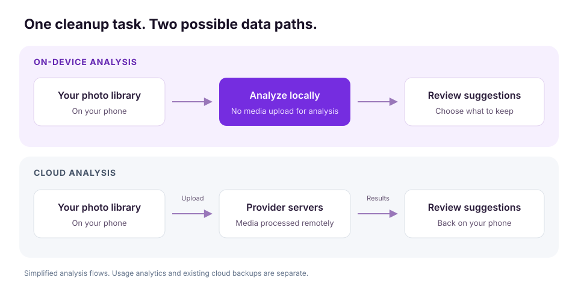

Your photo library may contain more than memories: receipts, screenshots of conversations, work documents, and personal details. Before giving a cleaner app access, ask one question: does it analyze your photos on your phone, or upload them elsewhere?
On-device photo cleaning can help you free up storage without sending your media to a cleaner provider for analysis. Fast Cleaner’s core cleanup flows use on-device processing, while limited screen-event analytics and diagnostics use Firebase Analytics. This reduces the need to share your media; it does not make a device immune to cyberattacks.
What AI is changing about cyber threats
In its 2026 Digital Defense Report, Microsoft describes AI as accelerating attacks and making sophisticated capabilities more accessible. It also reports that phishing and impersonation remain effective as AI changes their speed, scale, and personalization.
For everyday phone users, the useful lesson is to pay attention to both account security and unnecessary data sharing. A convincing message can still try to trick you into giving someone access. At the same time, choosing services that need less of your personal content can reduce where that content is handled.
The report concerns the wider cybersecurity landscape. It does not establish that photo cleaner apps are being specifically targeted or that every cloud service is unsafe.
What happens when a cleaner uploads your photos?
A cleaner that uploads media introduces another service into your photo library’s data journey. Its access controls, security, retention practices, and third-party processors now matter alongside the security of your phone.
Potential routes to exposure include stolen account credentials, software vulnerabilities, misconfigured storage, and excessive access permissions. These risks predate AI. AI can assist attackers, but it is not necessary for a breach.
Cloud processing can be useful and well protected. The practical question is whether an additional upload is needed for the task you want to complete. If duplicate detection can run locally, you can get that benefit without creating a media copy at the cleaner provider.

How on-device photo cleaning works
On-device processing means the app performs its content analysis locally on your phone. It can identify likely duplicate or similar photos and classify clutter without sending the media to the app provider’s servers for analysis.
AI does not automatically mean cloud processing. Machine-learning features can run on a device, depending on how the app is built. What matters is the actual data flow, rather than the word “AI” on a product page.
Local processing and analytics are also separate questions. An app can analyze photos locally while sending usage events or crash diagnostics to an analytics service. Look for a privacy policy that explains both.
Five privacy questions to ask any cleaner app
Use this as a reading checklist for any cleaner’s product page and privacy policy. Tick each question once you’ve found a clear answer.
You’ve reviewed all five questions. Use the answers to decide whether the app’s data practices fit your needs.
This checklist runs only in this page. Your selections are not saved or sent anywhere.
Review photo permissions as well. Grant the access needed for the cleanup you intend to perform, and revisit permissions when you stop using an app.
How Fast Cleaner handles your media
Fast Cleaner is built around on-device cleanup. According to our privacy policy, photos, videos, contacts, and on-device cleanup analysis are kept on your device and are not sent to us or Firebase Analytics.
Our policy separately describes limited screen-event analytics and related diagnostics through Firebase Analytics to help improve app flows and reliability. Privacy here means being specific about what stays local and what is collected.
Use Fast Cleaner to find duplicate photos, review similar images, clean up screenshots, and compress large videos. Review suggestions before confirming removal. Available features can vary by platform, operating system, and permissions, and storage savings depend on your library.
 Find similar photos
Find similar photos Review what to keep
Review what to keepLocal analysis and cloud backups are different
Using an on-device cleaner does not remove copies already stored in a separate cloud photo service. Your backup and sync settings continue to determine where those copies exist.
Before you delete: check how your photo service handles synced deletions and recovery. Removing an item from a synced library may also remove it from connected devices and cloud storage. Keep a separate backup of files you need to preserve.
Keep privacy part of your cleanup routine
Start with obvious clutter: unwanted duplicate shots, old screenshots, and large videos you no longer need. Review your choices, confirm your backup settings, and choose tools that explain their data practices clearly.
On-device cleanup addresses one specific privacy concern: sharing media with a cleaner provider for analysis. Continue protecting your phone and accounts with software updates, a strong device passcode, and passkeys or multifactor authentication where available. A storage cleaner does not replace those protections.
Less clutter.
Your media stays with you.
Find duplicates, review screenshots, and reclaim space with on-device cleanup for Android and iPhone.
Core media analysis stays on-device. Limited analytics and diagnostics are collected separately.
Source: Microsoft Digital Defense Report 2026, accessed November 9, 2026. Product data practices: Fast Cleaner Privacy Policy.